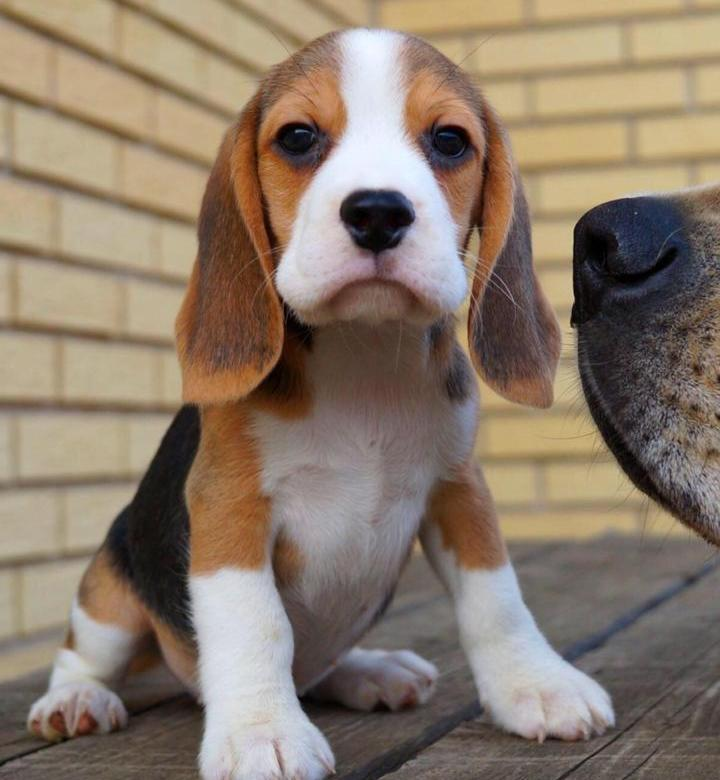

Бигль вполне подходит для содержания в квартире. Нужно определиться с местом, где собака будет есть, спать. Должно быть достаточно игрушек, чтобы в отсутствие хозяина, от тоски все не сгрыз. Также необходима двигательная активность, длительные и желательно активные прогулки в течении дня, не меньше трёх раз. Для городского бигля нужно приобрести специальную одежду для собак, чтобы защитить шерсть от грязи, зимой от холода, а лапы от реагентов и кусочков стекла.
Чтобы щенок бигля рос крепким и здоровым, необходимо обеспечить ему хорошие условия содержания и хорошо за ним ухаживать. И уже в первые дни после появления щенка в доме нужно начинать его воспитывать и обучать некоторым несложным командам. Как правило, добропорядочные заводчики снабжают своих покупателей инструкцией по содержанию и кормлению щенка, и всё, что требуется от нового владельца собаки — это в точности выполнять рекомендации заводчика.
Главная » Собаки » Породы собак » Бигль » Какой нужен уход собаке породы бигль: содержание в квартире и на улице + как правильно ухаживать за щенком? Какой нужен уход собаке породы бигль: содержание в квартире и на улице + как правильно ухаживать за щенком? Бигли отличаются дружелюбным характером. Они добры, веселы и ласковы. Уход за биглем не представляет никаких сложностей. Эти собаки неприхотливы в плане содержания и кормления. Благодаря небольшим размерам они легко могут жить как в просторном домовладении, так и в небольшой квартире. Однако, у этих очаровательных охотников имеются породные особенности, которые необходимо учитывать при их содержании в доме. Содержание статьи [hide] 1 Как ухаживать за щенком? 2 Основные правилах ухода за взрослой собакой 3 Подходит ли для квартиры? 4 Личное место 5 Как приучить щенка к пеленке? 6 Как кормить? 7 Уход за шерстью 8 Как выгуливать? 9 Как правильно стричь когти? 10 Чистка ушей 11 Купание собаки 12 Содержание на улице 13 Заключение и выводы 14 Полезное видео Как ухаживать за щенком? Чтобы щенок бигля рос крепким и здоровым, необходимо обеспечить ему хорошие условия содержания и хорошо за ним ухаживать. И уже в первые дни после появления щенка в доме нужно начинать его воспитывать и обучать некоторым несложным командам. Как правило, добропорядочные заводчики снабжают своих покупателей инструкцией по содержанию и кормлению щенка, и всё, что требуется от нового владельца собаки — это в точности выполнять рекомендации заводчика. ВАЖНО! Особенно неукоснительно нужно в первые две недели после покупки щенка соблюдать рекомендации заводчика в том, что касается кормления питомца. Ещё до покупки бигля, необходимо позаботиться о приобретении лежанки для щенка и с первого дня необходимо приучать малыша к его месту. До окончания вакцинации и срока карантина щенков нельзя выгуливать на улице, а потому, нужно позаботиться об устройстве временного собачьего туалета в доме. Уход за щенком этой породы несложен — необходимо ежедневно осматривать глаза и уши щенка, а чистить их нужно по мере необходимости. Когти щенкам нужно время от времени подрезать когтерезом. Купать маленького бигля нежелательно. Если же в этом возникает необходимость, то нужно помнить о том, что впервые эту процедуру можно проводить только через неделю после покупки питомца. Необходимо в точности придерживаться рекомендуемого заводчиком или ветеринаром графика прививок и дегельминтизаций. Также, нужно вовремя избавлять щенка и от наружных паразитов
Взрослый бигль не нуждается в сложном уходе за шерстью — достаточно 1-2 раза в неделю расчёсывать её щёткой, а во время линьки вычёсывать отмирающий подшерсток.
Уши бигля необходимо ежедневно осматривать, а чистить не чаще раза в неделю. Использовать для этого рекомендуется ватные палочки, предварительно обмакнув их в специальный состав для чистки ушей собак. Глубоко лезть питомцу в уши не нужно — достаточно очистить видимую часть слухового прохода. Внутреннюю поверхность уха протирают при загрязнении влажным ватным тампоном, смоченным той же жидкостью или просто тёплой водой. После протирания внутренней поверхности уха, её нужно как следует высушить, так как в противном случае оставшаяся на ухе влага может вызвать воспаление.
Бигль — собака, которая одинаково комфортно чувствует себя и в городе, и в сельской местности. С питомцем, живущим в квартире, нужно подолгу гулять. Причём, гулять по улицам города пёс должен на поводке. Если бигль живёт в частном доме, то оптимальный вариант для него — просторный вольер с будкой. Что же касается ухода за биглем, то он не представляет никаких затруднений, что и делает этих собак очень удобными в плане содержания.
Бигль (англ. Beagle) это маленькая, и самая дружелюбная в мире собака, отличный друг как для взрослых, так и для детей. Они веселы, активны, но, как и все гончие, могут быть упрямыми и их дрессировка требует терпения и смекалки.
Бигли были охотничьими собаками, и использовали при охоте на небольших животных, зайцев и кроликов. Сейчас это скорее собака-компаньон, но они используются и на охоте. Чуткий нос ведет их по жизни, и они никогда не бывают так счастливы, как найдя новый, интересный запах.